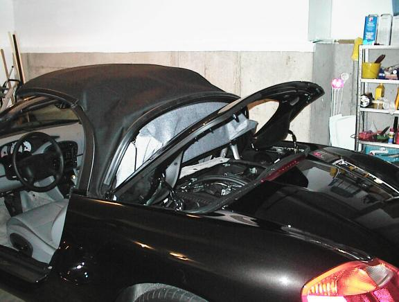
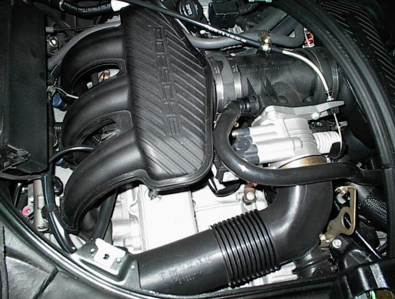
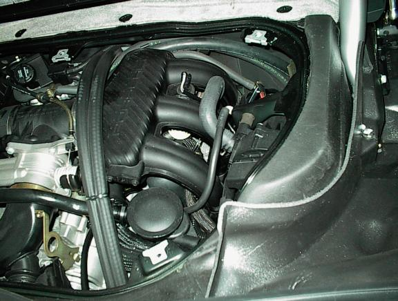
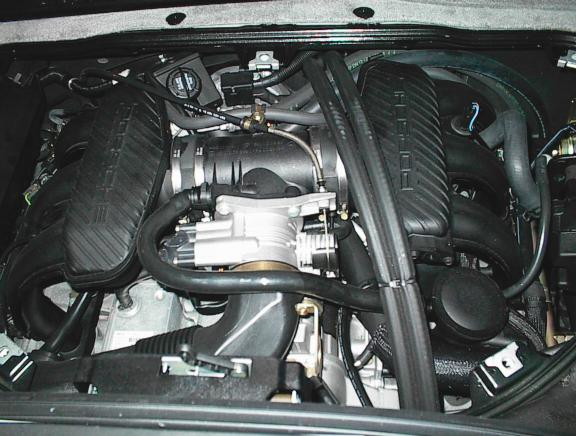

Porsche
Boxster Engine
Here's how I started. I opened the cab top about halfway and exposed the engine compartment. Then started to unscrew all the pieces. In this picture, you'll see that the pieces are already removed.
Incidentally, this is the garage of my previous house.

Here's a nice shot of the left side of the engine -- my left if I were sitting in the driver's seat. Note the cleanliness. I hope it stays this clean forever.

Here's another picture except showing the right side and the cowling around the engine. Lots of stuff crammed into that little compartment.

Another picture showing the engine -- both left and right sides.
